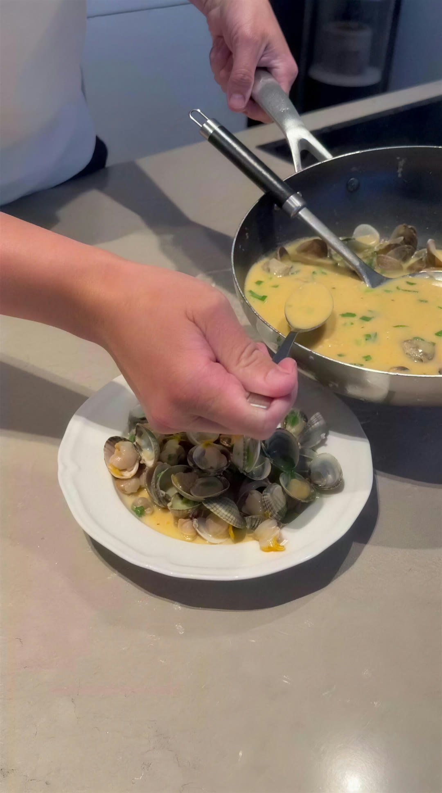
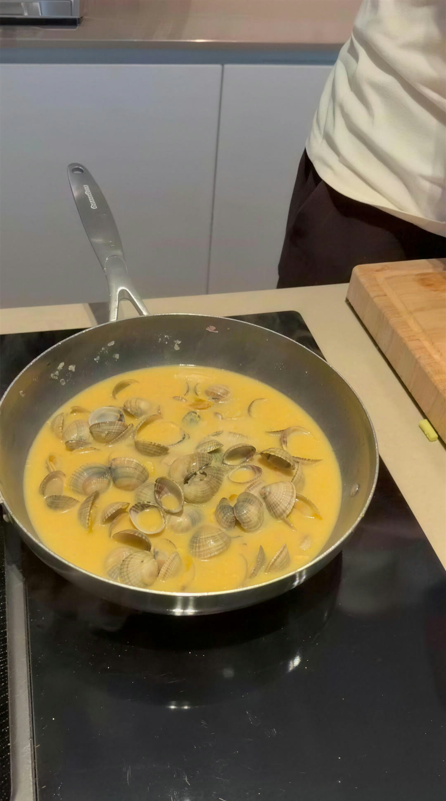
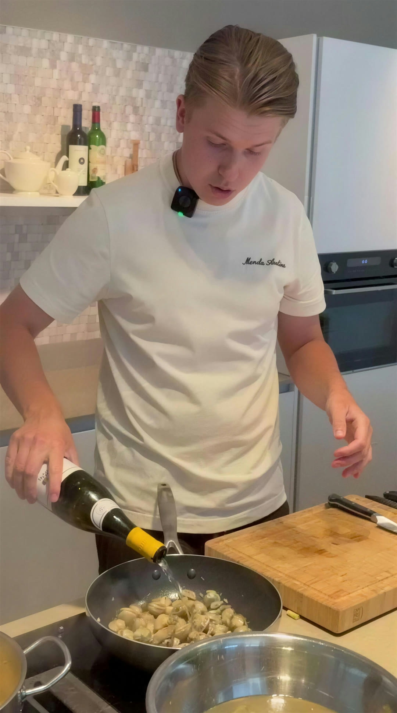
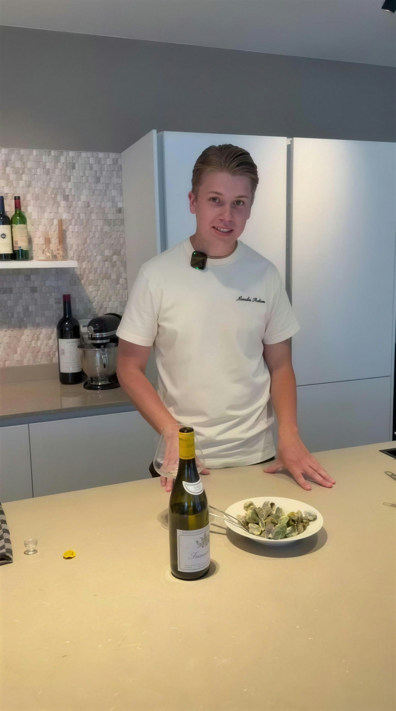

Romige tom yum met kokkels
Een Thaise klassieker met een romige twist van kokosmelk. Verse kokkels en hun kookvocht geven de soep zilte diepgang, limoen en koriander maken hem fris. Eenvoudig om te maken, met veel smaak.


Bereiding
Verhit een pan en fruit een van de gesnipperde sjalotten kort aan. Blus af met de witte wijn en breng aan de kook. Voeg de kokkels toe, doe de deksel erop en kook 3 tot 4 minuten, tot alle schelpen open staan.
Zeef het kookvocht door een fijne zeef en bewaar het. Haal de kokkels uit de schelpen en houd een paar kokkels in de schelp apart voor de presentatie.
Fruit de andere sjalot zachtjes aan met de knoflook en de rode chili. Voeg de tom yum pasta toe en bak die ongeveer een minuut mee, zodat de aroma's goed vrijkomen.
Schenk de kokosmelk erbij en laat de soep vijf minuten zachtjes trekken.
Breng de soep op smaak met het kookvocht van de kokkels, de vissaus en het limoensap. Proef tussendoor en voeg zoveel kookvocht toe als nodig is voor een mooie zilte umami-smaak.
Voeg de kokkels toe en verwarm ze nog kort mee. Verdeel de kokkels over warme diepe borden, schenk de romige tom yum erover en garneer royaal met verse koriander. Direct serveren.
Tip van Maarten
Het kookvocht van de kokkels is de geheime smaakmaker van dit gerecht. Voeg het beetje bij beetje toe en proef steeds tussendoor; zo blijft de soep perfect in balans.

De wijn die erbij hoort
In de video schenkt Maarten er een droge witte wijn bij. Wil je bij elk nieuw recept ook de wijntip? Schrijf je in, dan hoor je het als eerste.
Houd me op de hoogte
In de keuken draait alles om balans
Eerlijk product, pure smaken en creatieve gerechten met karakter. Ik deel wat in mijn keuken werkt, van techniek tot de wijn die het gerecht af maakt.
Geen sterrenkeuken-taal. Wel de kleine dingen die het verschil maken tussen goed en onvergetelijk.
Volg Maarten op Instagram